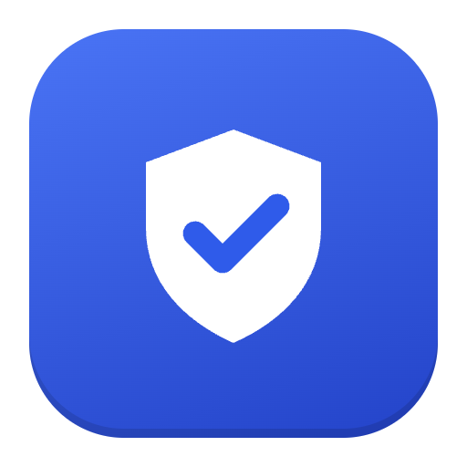

CoberturasPolítica de privacidad
Vigente desde el 8 de octubre de 2026.
Qué datos usa la aplicación
Los datos que la persona usuaria carga para cada consulta (DNI, sexo, apellido y nombre del paciente) y las respuestas que devuelven las páginas oficiales consultadas.
Dónde se guardan
- En la computadora donde se usa la aplicación: los comprobantes en PDF, el legajo y un historial de consultas.
- Las claves que la persona usuaria carga (por ejemplo, la de IOMA) y el permiso de Google Drive se guardan cifrados con la protección del sistema operativo, solo en esa computadora.
- Si la persona usuaria conecta su Google Drive, una copia de los comprobantes se sube a su propio Drive.
Uso de Google Drive
La aplicación solicita únicamente el permiso drive.file: puede crear carpetas y archivos y acceder solo a los que ella misma creó. No lee, modifica ni elimina ningún otro contenido del Drive. También solicita el correo de la cuenta, solo para mostrar a qué cuenta está conectada. El uso de la información recibida de las APIs de Google cumple con la Política de Datos del Usuario de los Servicios de las APIs de Google, incluidos los requisitos de uso limitado.
Qué no hace
- No envía datos a servidores propios ni de terceros, más allá de las páginas oficiales consultadas y del Drive de la persona usuaria.
- No vende ni comparte datos.
- No usa los datos para publicidad ni para entrenar modelos de inteligencia artificial.
Informes de error
Si la persona usuaria lo decide, puede enviar un informe técnico por correo. El informe no contiene datos de pacientes y se revisa antes de enviarlo.
Cómo quitar el acceso
Desde la aplicación (Configuración → Desconectar) o desde myaccount.google.com/permissions. Los datos guardados en la computadora se eliminan desinstalando la aplicación y borrando la carpeta de gestiones.